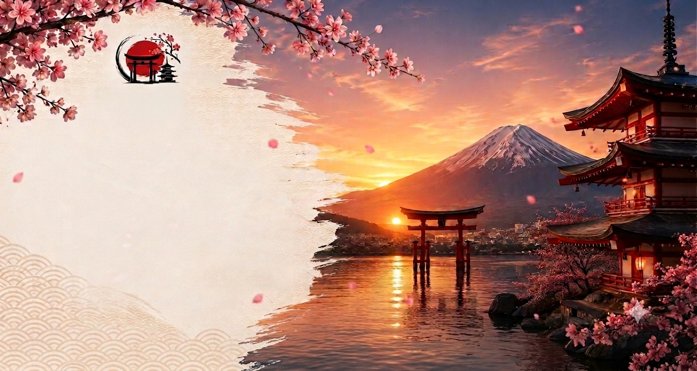
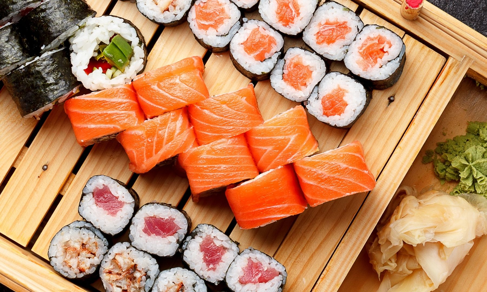
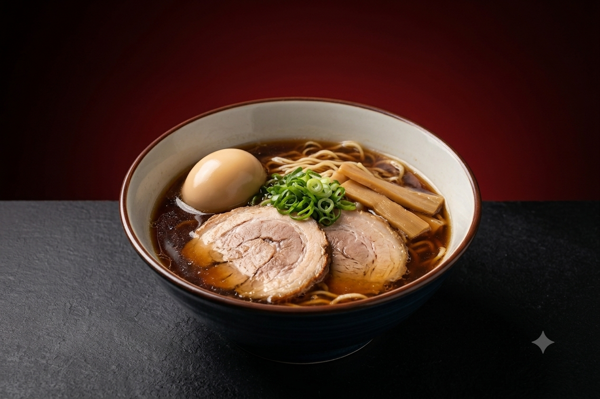
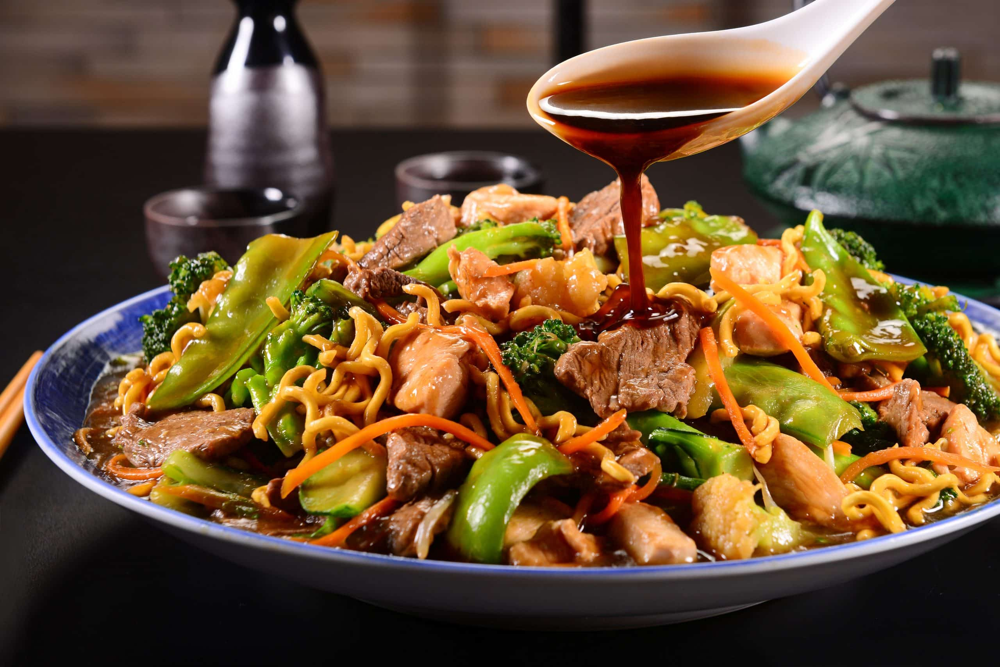
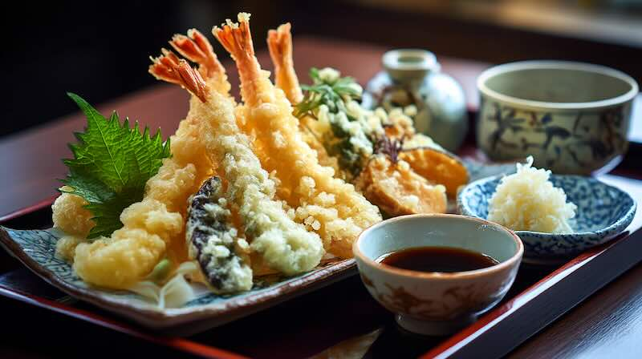
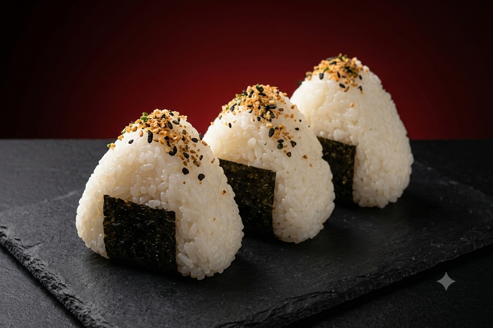
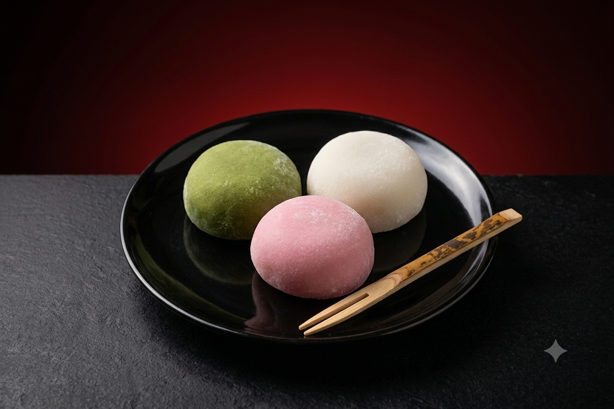

Abertura Oficial
Cerimônia de abertura com apresentação de tambores japoneses.
Festival Cultural • Gastronomia • Oficinas • Apresentações
Viva uma experiência única com a cultura japonesa. Descubra sabores tradicionais, apresentações culturais, oficinas, exposições e muito mais em um evento pensado para toda a família.
15 a 17 de Agosto de 2026
Centro de Eventos da Cidade
Conheça a tradição, a gastronomia e a cultura japonesa em um evento pensado para todas as idades.

A Semana da Cultura Japonesa é um evento dedicado à valorização das tradições, da gastronomia, das artes e dos costumes japoneses. Durante três dias, visitantes poderão participar de oficinas, apresentações culturais, degustações e atividades interativas voltadas para toda a família.
Confira as principais atrações do evento.
Cerimônia de abertura com apresentação de tambores japoneses.
Aprenda as técnicas tradicionais da dobradura japonesa com instrutores especializados.
Degustação de pratos típicos preparados por restaurantes parceiros do evento.
Descubra como preparar sushi utilizando ingredientes e técnicas tradicionais.
Espetáculo musical com tambores japoneses e apresentações culturais.
Show de música tradicional e homenagem à cultura japonesa.
Aprenda técnicas tradicionais para o preparo de sushi com chefs especializados.
Demonstração e oficina prática da tradicional arte da escrita japonesa.
Degustação de pratos típicos preparados por restaurantes parceiros.
Aprenda técnicas básicas de desenho no estilo dos mangás japoneses.
Apresentação seguida de participação aberta ao público.
Encerramento do segundo dia com apresentações musicais japonesas.
Demonstração da tradicional cerimônia japonesa conduzida por especialistas.
Mostra de vestimentas, objetos históricos e artesanato japonês.
Continuação da feira gastronômica com pratos típicos e sobremesas orientais.
Aprenda os princípios da tradicional arte japonesa de arranjos florais.
Demonstrações de Judô, Karatê e Kendô realizadas por atletas convidados.
Agradecimentos finais e apresentação cultural marcando o encerramento da Semana da Cultura Japonesa.
Conheça alguns pratos tradicionais que estarão disponíveis durante o evento.

Combinação de arroz temperado com peixes e ingredientes frescos.

Caldo aromático servido com macarrão, carne suína, ovo e vegetais.

Macarrão salteado com legumes frescos e molho especial.

Legumes e camarões empanados em massa leve e crocante.

Bolinho de arroz recheado e envolto por alga nori.

Doce japonês preparado com massa de arroz e recheios variados.
Confira alguns momentos e atrações da Semana da Cultura Japonesa.
Assista a um vídeo sobre a cultura japonesa e inspire-se para participar do evento.